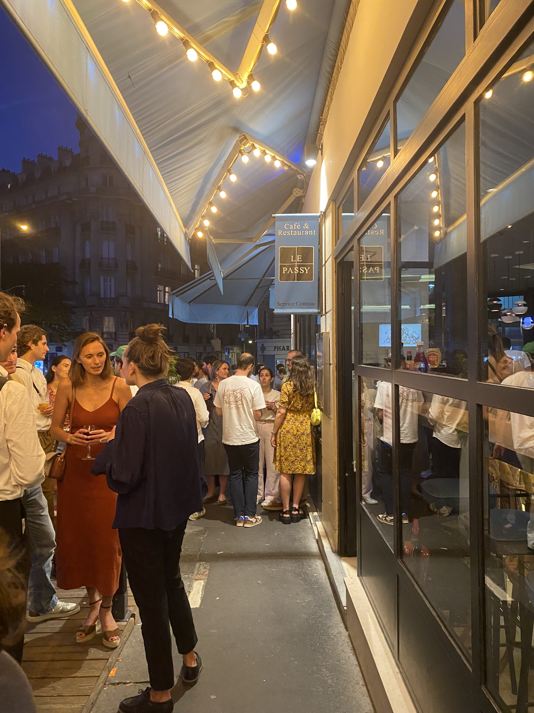
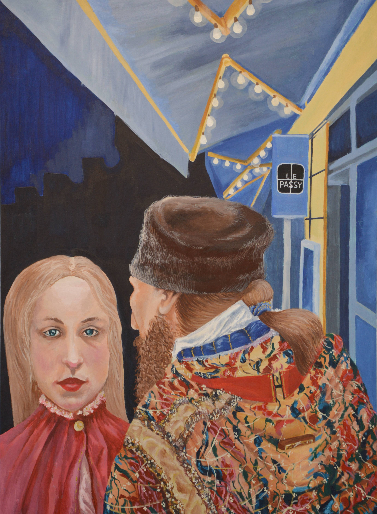
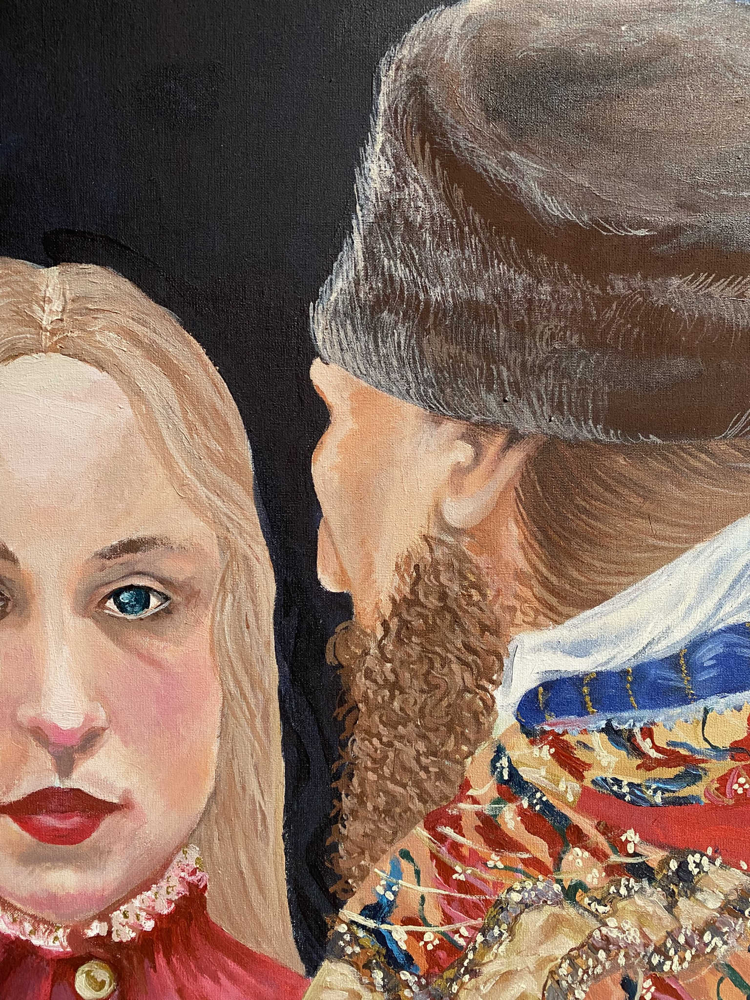

Mysterium tremendum et fascinans - Rudolf Otto
Prvotní letopis
- Chronique de Nestor -
Повѣсть времяньныхъ лѣтъ

Lors d’une soirée tardive d’été dans un certain café parisien,
une jeune femme, une icône vivante. Sur la surface de sa
conscience émerge une scène de piété surgie d’un autre
lieu et d’un autre temps, devient le point de jonction entre le
quotidien et l’éternel. Cette réminiscence sacrée suspend sa
perception du réel, sublime le moment dans une épiphanie
temporelle.
- NS
- NS
Natalia Stavrovskaja
été 2025
Café Passy
été 2025
Café Passy
2024 - 2026

Natalia Stavrovskaja
Paris 2025
54 × 73 cm
Peinture Acrylique
Paris 2025
54 × 73 cm
Peinture Acrylique

Détail du portrait
Hierophanie Temporelle
[U]ne société porte son art comme l’arbre ses fleurs, en raison de leur enracinement dans un monde que ni l’un ni l’autre ne prétend faire totalement sien.
- Anthropologie Structurale deux, C. L. Strauss